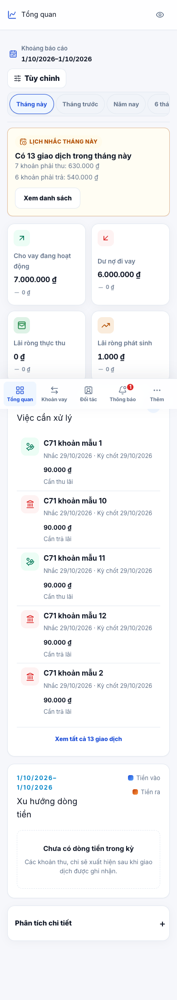
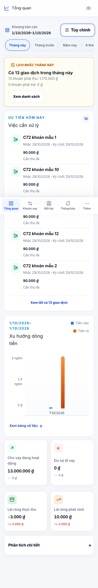
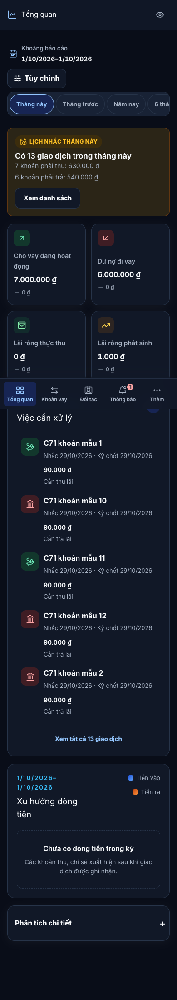
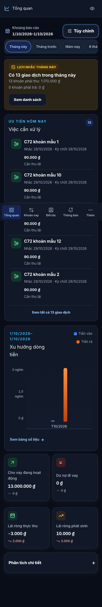
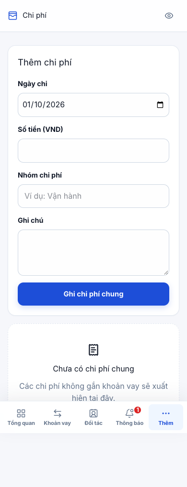
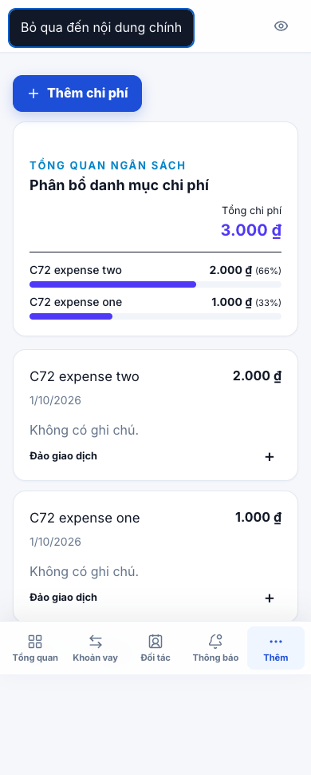
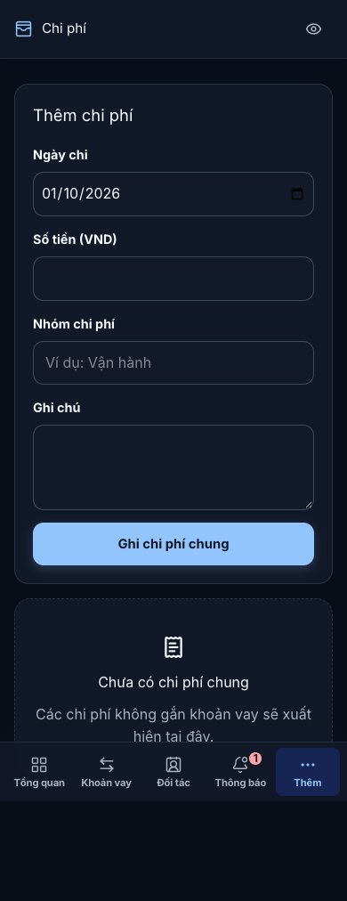
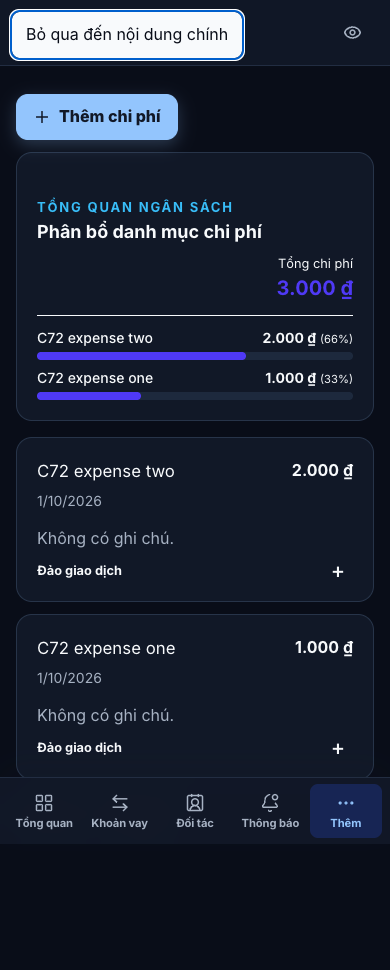

Trước — C71

Snapshot audit C71; ngày và fixture có thể khác.Ảnh trình duyệt với dữ liệu giả trong môi trường kiểm thử riêng. Chưa triển khai lên Production. Ảnh không chứng minh kiểm thử thiết bị thật hoặc screen reader.
Chi phí mở bằng nút “Thêm chi phí”; dashboard đưa tác vụ lên trước KPI trên mobile. Desktop giữ bố cục đối chiếu. Bản nháp và phản hồi thông báo được kiểm tra bằng E2E, không thể kết luận từ ảnh.

Snapshot audit C71; ngày và fixture có thể khác.

Snapshot audit C71; ngày và fixture có thể khác.

Snapshot audit C71; ngày và fixture có thể khác.

Snapshot audit C71; ngày và fixture có thể khác.